1. shallowwaterfoamの調査
2. 自己紹介
- さんのみや
- 道路設計CADの会社でSE
- OpenFOAMをよく使う
- 開水路流れのシミュレーションがメイン
3. 目次
- 動機：なぜshallowwaterfoamを調査するのか
- shallowwaterfoamとinterFoamとの比較
- 浅水流方程式の本質：水深積分
- shallowwaterfoamのTutorial
- shallowwaterfoamの支配方程式
- メッシュ
- 境界条件・初期条件
- 数値スキーム（fvSchemes）の説明
- 計算設定ファイル（fvSolution）
- 計算実行
- 計算結果の解説
- メッシュを細分化して結果を比較
- 結論
4. 動機：なぜshallowwaterfoamを調査するのか
- 土木は計算の対象となる地形や時間が膨大，3次元流体解析は計算リソースの観点で非現実的
- 次元を落としても本質を見失わずに予測を行う方法を調査したい（interFoam→shallowwaterfoam）
- ちなみに河川分野はiRICが河川の設計に普及しつつある．
- ※iRIC:International River Interface Cooperative
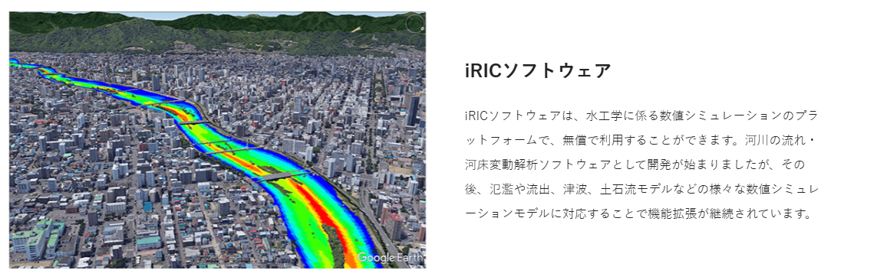
図1: iRICのホームページより拝借（https://i-ric.org/about/）
5. shallowwaterfoamとinterFoamとの比較
| 3次元VOF法 | 浅水流方程式 | |
| 連続式 | 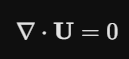 |
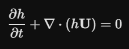 |
| Navier-Stokes | 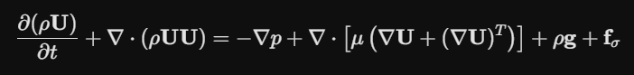 |
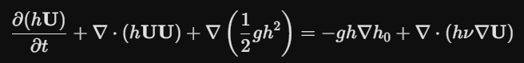 |
| VOF移流方程式 | 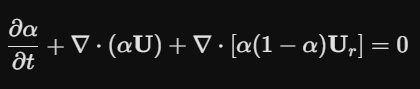 |
なし |
| 計算時間 | 遅い（3次元メッシュ＋界面捕獲） | 早い（2次元メッシュ＋液面計算不要） |
| 正確さ | 高い（波の砕波，3次元的な渦も解ける） | 低い（波の砕波，3次元的な渦は苦手） |
6. 浅水流方程式の本質：水深積分
- 3次元流体は鉛直方向にも多くのメッシュ生成を行う
- 浅水流方程式は，鉛直（z軸）方向を1メッシュに積分したもの
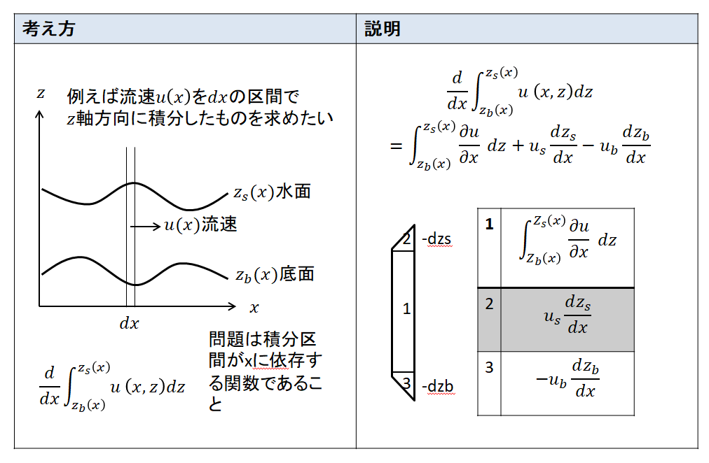
図2: 水深積分（ライプニッツルール）の説明
7. shallowwaterfoamのTutorial
- OpenFOAM10にshallowwaterfoamのチュートリアルとそのドキュメントで学習
- https://www.tfd.chalmers.se/~hani/kurser/OS_CFD_2010/johanPilqvist/johanPilqvistReport.pdf
- ちなみに，あまりshallowwaterfoamについて解説している記事を見かけないのでレアかもしれません．
- このドキュメントは2010年11月にピアレビューを終えているようです．
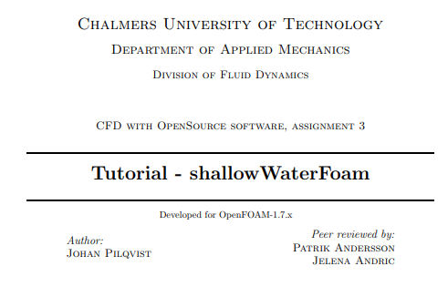
図3: 20260522153859
8. shallowwaterfoamの支配方程式
- 資料作成の時間がなく，モロパクリで申し訳ございません
- コリオリ力が考慮されているようです．
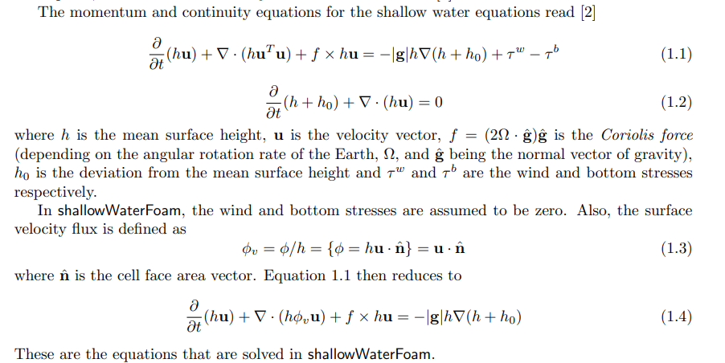
図4: 支配方程式
9. メッシュ
- 1m×1mの計算領域
- 20×20
- メッシュサイズは0.05m
- 鉛直方向には0．1m
| メッシュの外観1 | メッシュの外観2 |
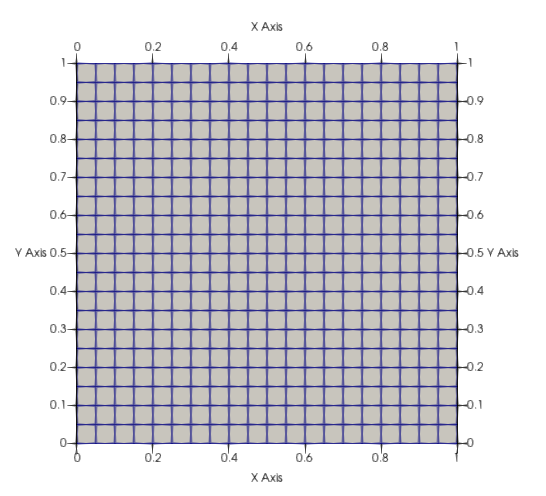 |
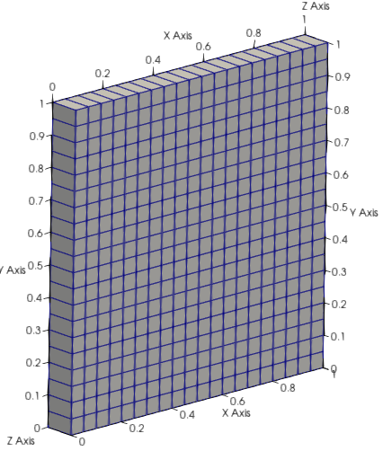 |
10. 境界条件・初期条件
- h0は地形の高さ，障害物が計算領域の中央にある（0.45,0.45,0）,(0.55,0.55,0.1)にh0=0.01
- hは水深（h0からの高さ）で全領域で0.01mになるように設定してある．
- hUは流量を意味するhU=0.001m^2/s
- U=hU/h=0.1m/sと計算できる．
- 出口に水深を固定，入口に流量固定
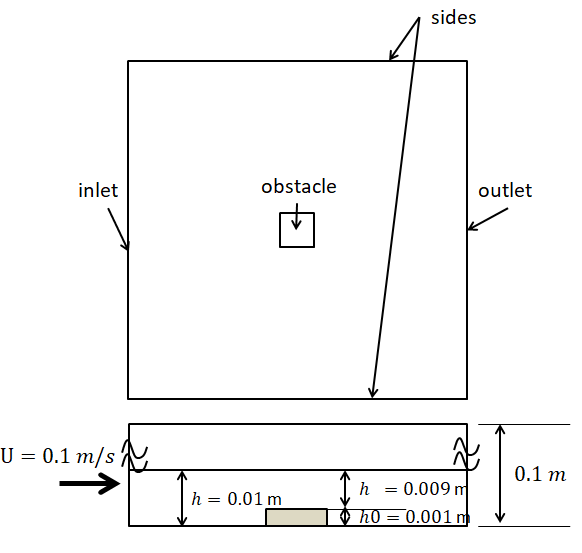
図5: 計算領域および障害物の寸法
| inlet | outlet | sides | |
| h | zeroGradient | 0.01 | zeroGradient |
| hU | 0.001 | zeroGradient | slip |
| hTotal | 0.01 | 0.01 | 0.01 |
11. 数値スキーム（fvSchemes）の説明
- 時刻の計算はクランクニコルソンで0.9の係数で安定化している（1.0で完全なクランクニコルソン）．
- 移流項は，Gauss linearで中心差分
- LUSTは linear (75%) + linearUpwind (25%) のブレンドスキーム
ddtSchemes
{
default CrankNicolson 0.9;
}
gradSchemes
{
default Gauss linear;
}
divSchemes
{
default none;
div(phiv,hU) Gauss LUST un;
}
laplacianSchemes
{
default Gauss linear uncorrected;
}
interpolationSchemes
{
default linear;
}
snGradSchemes
{
default uncorrected;
}
12. 計算設定ファイル（fvSolution）
- Geminiの情報
- PCG（共役勾配法）+DIC（対角不完全コレッキー分解）
- PBiCG（双共役勾配法）+DILU（対角不完全LU分解）
solvers
{
h
{
solver PCG;
preconditioner DIC;
tolerance 1e-10;
relTol 0.01;
}
hFinal
{
$h;
tolerance 1e-10;
relTol 0;
}
hU
{
solver smoothSolver;
smoother GaussSeidel;
tolerance 1e-10;
relTol 0.1;
}
hUFinal
{
$hU;
tolerance 1e-10;
relTol 0;
}
}
PIMPLE
{
nOuterCorrectors 3;
nCorrectors 1;
nNonOrthogonalCorrectors 0;
momentumPredictor yes;
}
13. 計算結果の解説
- 同心円状に波が広がる様相が確認できた．
- 障害物の上で流速が高い状態であるとして，その早い流れが障害物を通過すると遅い流れにぶつかるので水面が上がる．
- 水面の上がり方は障害物を中心として発生し，その波は0.1m/sの流速で運ばれる
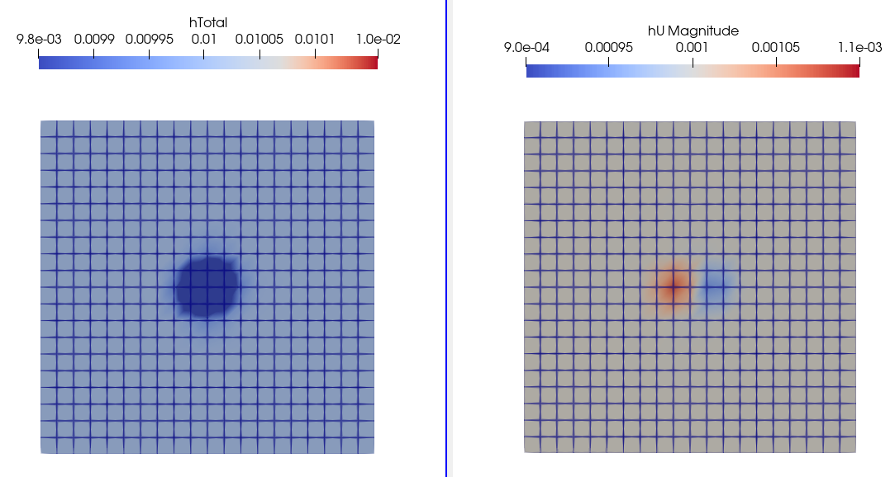
図6: 0.1s
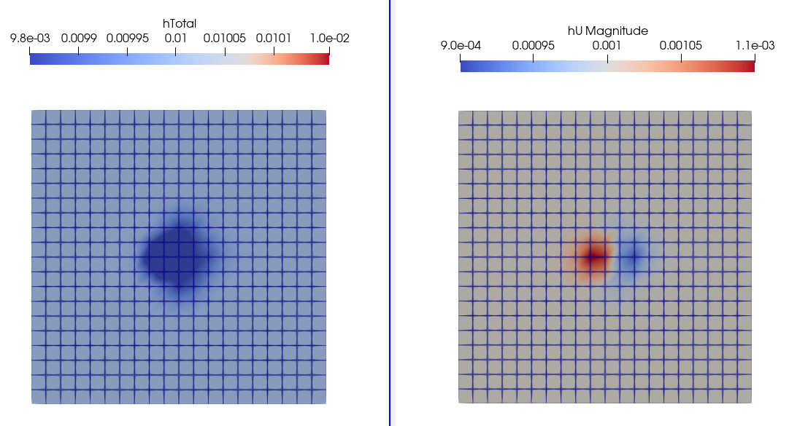
図7: 0.2s
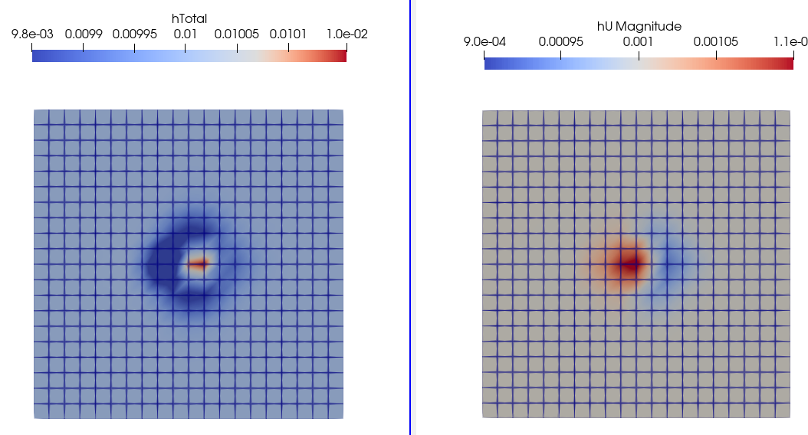
図8: 0.3s
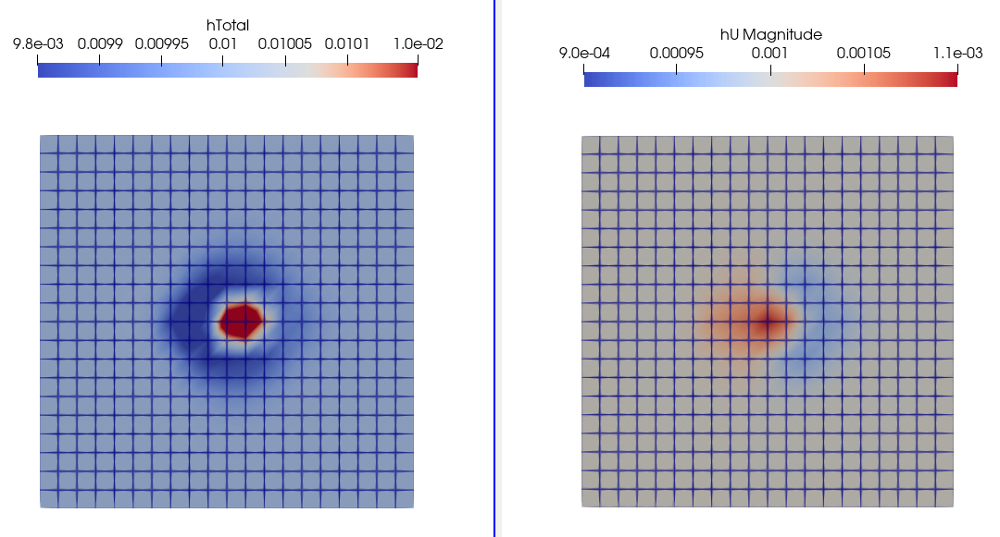
図9: 0.4s
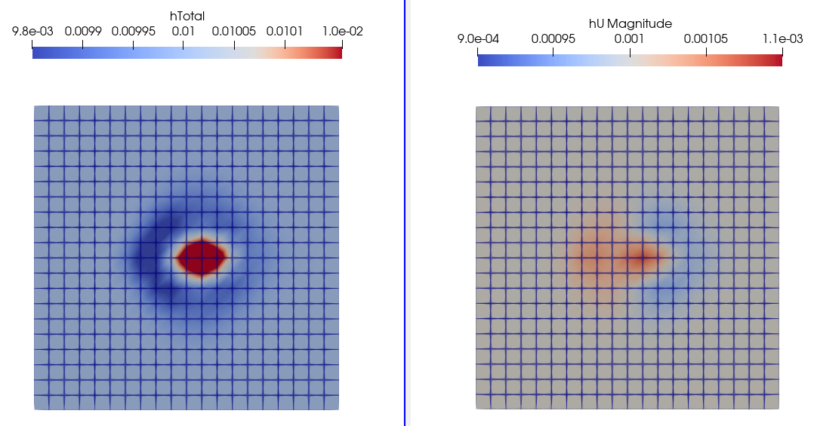
図10: 0.5s
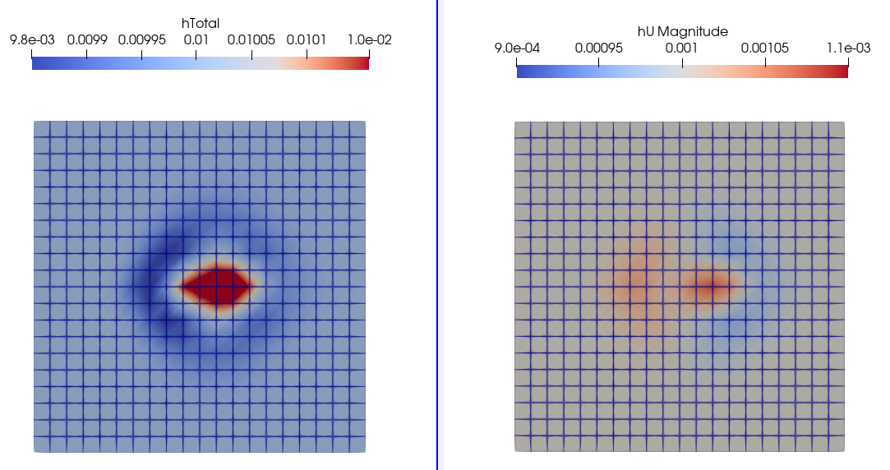
図11: 0.6s
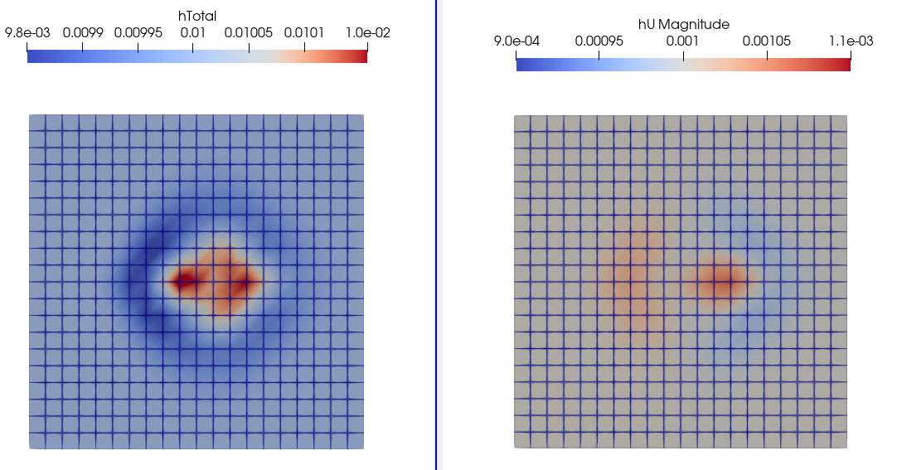
図12: 0.7s
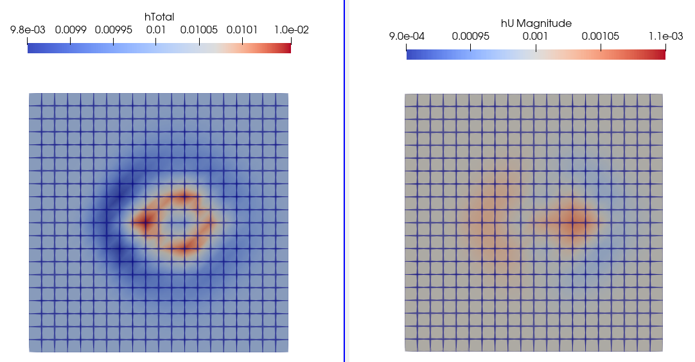
図13: 0.8s
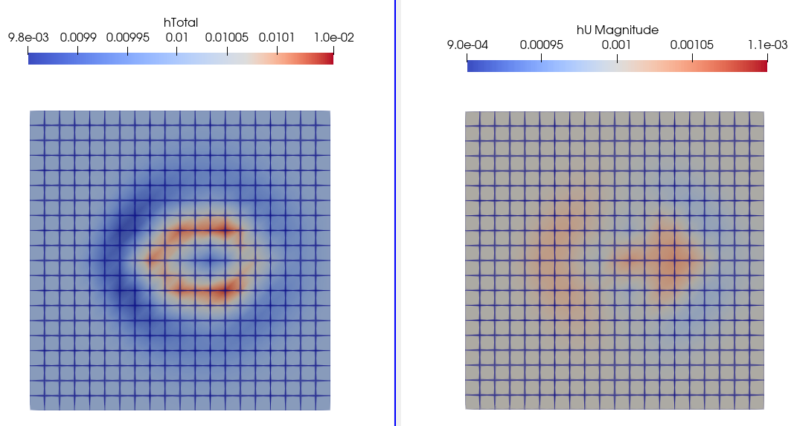
図14: 0.9s
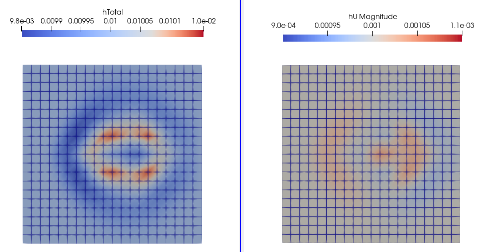
図15: 1.0s
14. メッシュを細分化して結果を比較
- メッシュを細かくすると，メッシュが粗い場合よりも波の大きさが小さい
- メッシュサイズを細かくするほど厳密解に近づくという理解なので，チュートリアルのメッシュ数は粗いと考える．
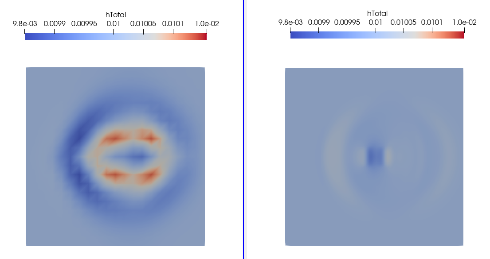
図16: メッシュ数20x20と80x80（1 s）
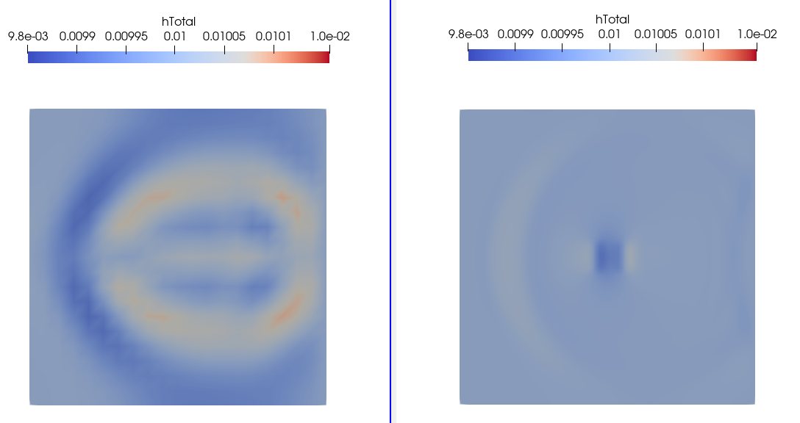
図17: メッシュ数20x20と80x80（1.5 s）
15. 結論
- shallowwaterfoamの以下の理解が得られた
- 浅水流方程式：鉛直方向に水深積分した基礎方程式
- 基本パラメータh（平均水深，h0からの距離）,h0（障害物の高さ）,hU（単位幅あたりの流量）
- 境界条件と初期条件
- 計算結果の解釈方法（障害物の上を通過した早い流れが遅い流れとぶつかり，水深が上がる）
- 今後の予定
- shallowwaterfoamに摩擦項を加えて改良
- 乱流モデルの追加